A two-part robotics competition: build robots to rescue stranded figures across an obstacle course, then build a fully autonomous rover to carry a figure through a maze without any operator input. Team of four, with Bailey as team lead.
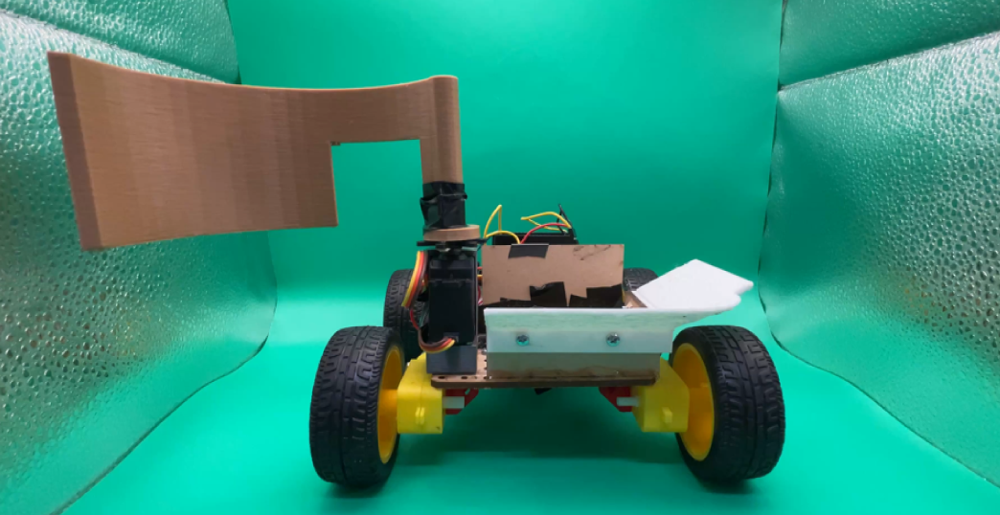
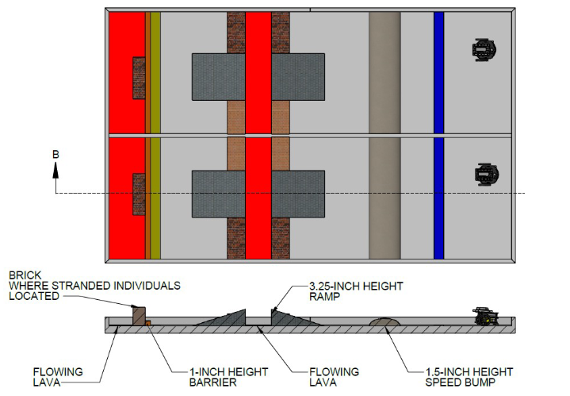
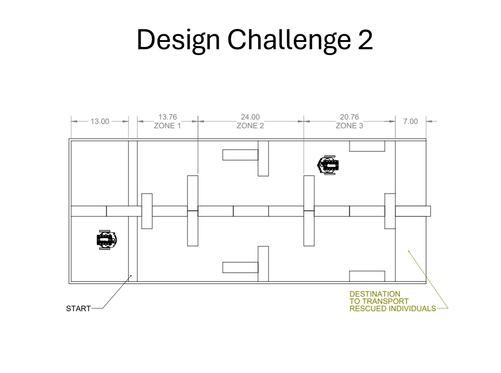
Before committing to any single mechanism, we scored multiple concepts against weighted criteria for each robot — ease of manufacturing, ease of use, accuracy, maneuverability, and how many people each design could carry or how fast it could deploy. The arm-based rescue bot and the mega bridge design came out ahead and became our starting points.
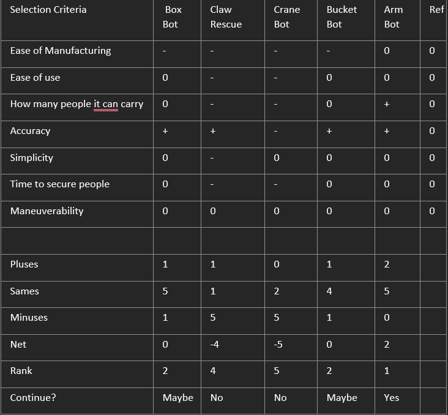
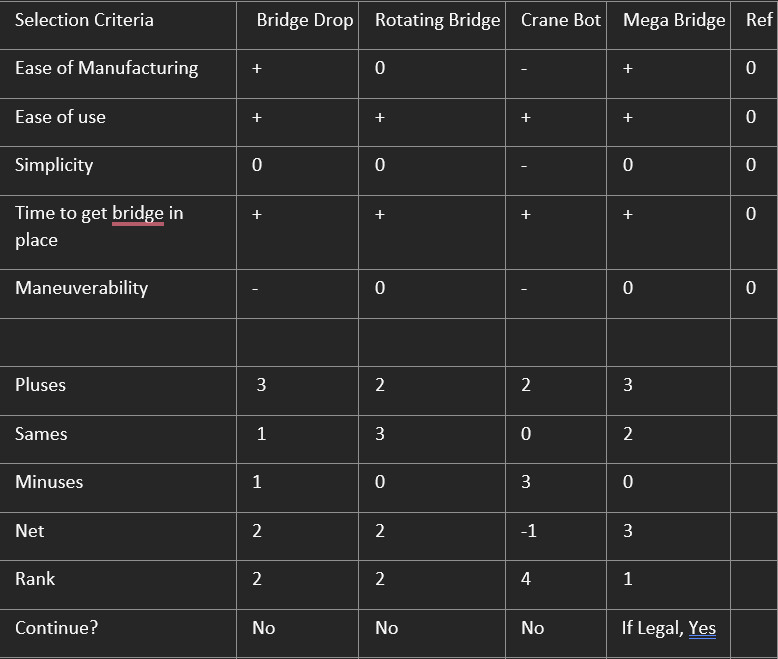
Every mechanism went through multiple failed builds before we landed on something reliable. Here's the path for both robots, roughly in order.
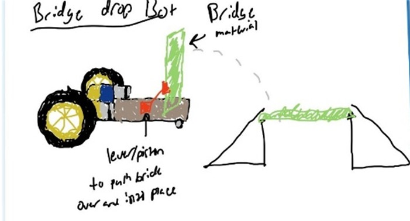
Early concept using a lever/piston to push bridge material up and over into place. Simple in theory, but hard to control precisely with a single actuator.
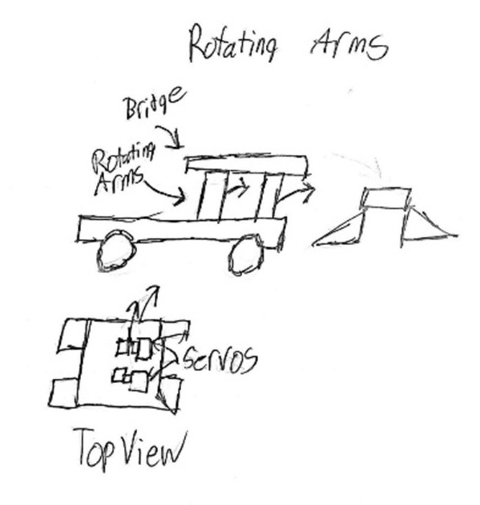
Replaced the piston with servo-driven rotating arms to lower the bridge more predictably, sketched out with a top-view servo layout.
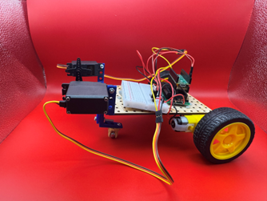
Struggled to clear the initial speed bump — the front geometry wasn't tall enough to ride over it cleanly.
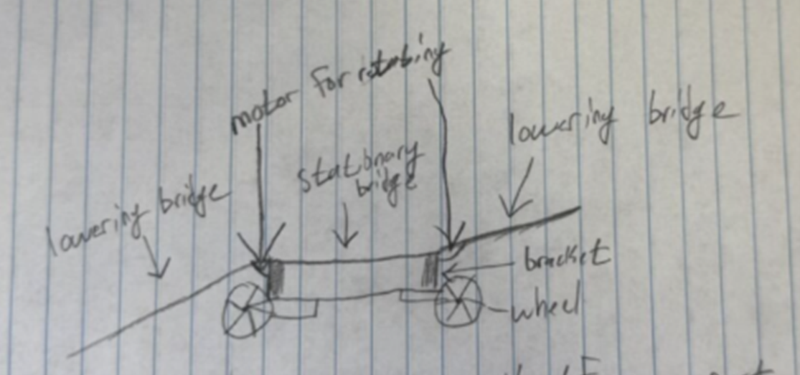
Reworked the bridge geometry with a stationary center section and lowering ends on brackets, aiming for a more stable placement across the gap.
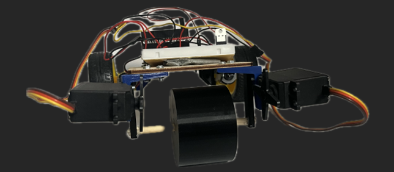
Added a much larger cylindrical front wheel and lowered the servo mounts to clear the bump reliably, with dual servos handling deployment.
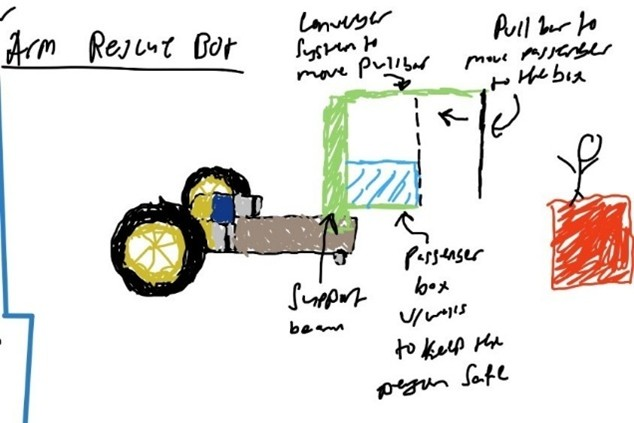
Used a pull-bar and conveyor system to move a walled passenger box toward the stranded figure. Mechanically complex for what it needed to do.
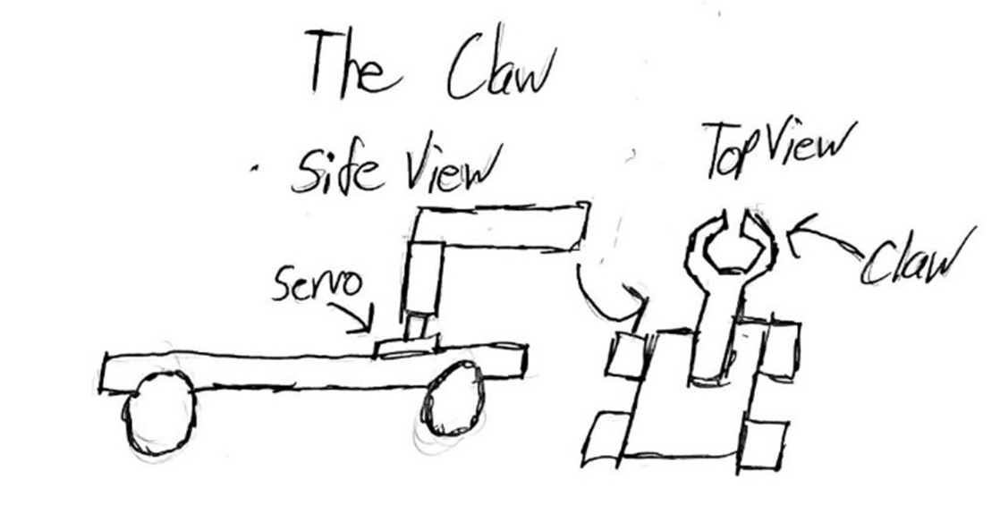
Swapped to a servo-driven claw meant to grip and lift figures directly. Cardboard and popsicle-stick mockups gave way to a 3D-printed version.
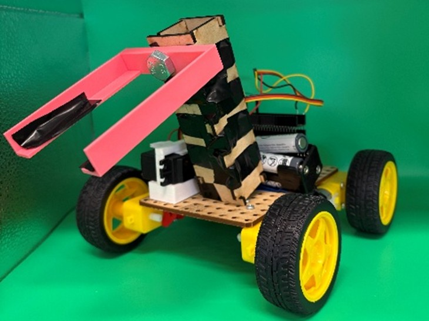
Alignment and claw width made pickup unreliable in practice — the mechanism worked on paper but not consistently on the course.
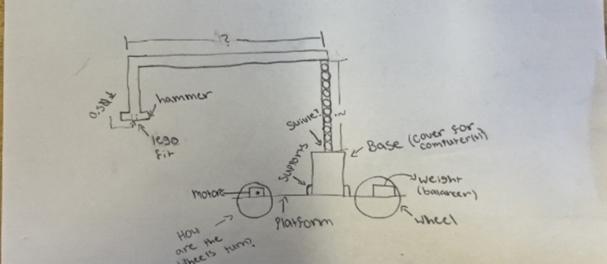
Explored a hammer-style attachment on a swiveling base, weighted for balance. Ultimately too complex to fabricate reliably in the time we had.
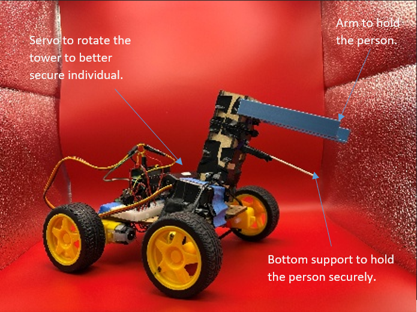
A rotating tower with an arm to hold and secure the figure. Functional concept, but the pickup mechanism still wasn't consistent enough to trust in competition.
Replaced the lifting/gripping approach entirely with a simpler servo-driven sweep arm that pushed figures into a laser-cut basket. Less elegant, far more reliable — this is what we ran in competition.
For DP2, a separate robot ran the maze with zero manual input. Control logic ran on three Sharp IR sensors with failsafes and a turn counter, mounted through a custom SolidWorks bracket.
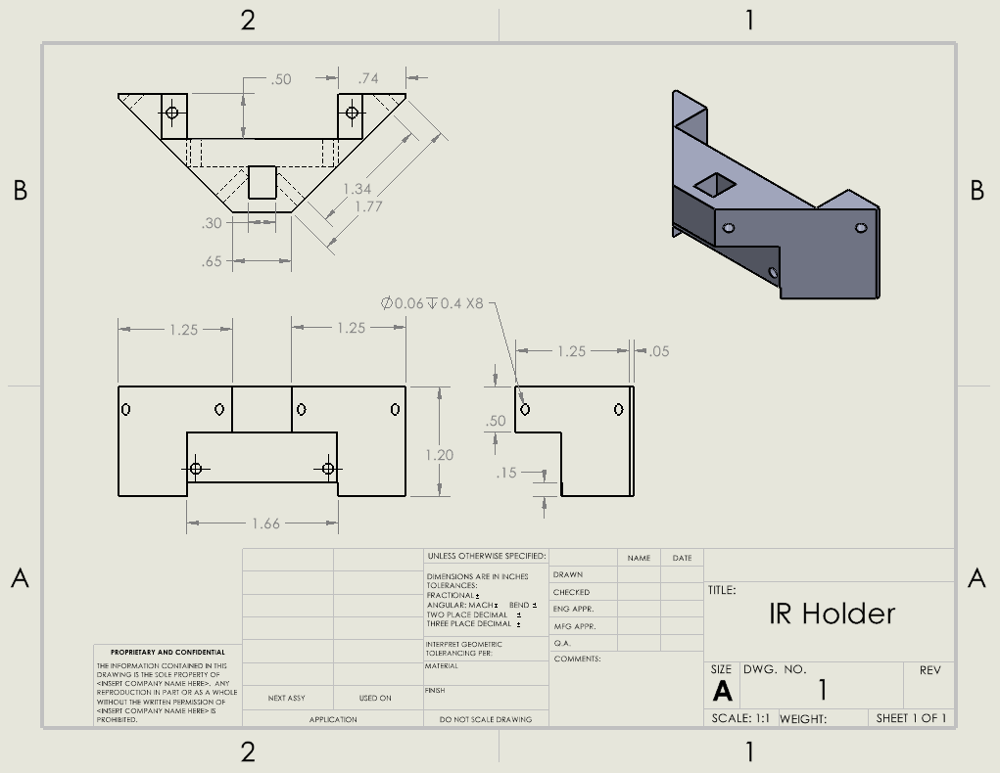
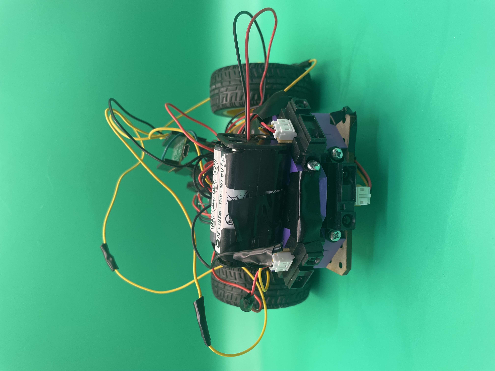
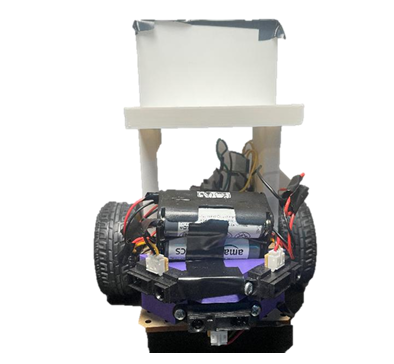
| Robot | Criteria | Result |
|---|---|---|
| Bridge bot | Clears speed bump (1st) | 5 / 5 pts |
| Bridge bot | Deploys bridge | 20 / 20 pts |
| Bridge bot | Places bridge on notch | 20 / 20 pts |
| Bridge bot | Clears speed bump (2nd) | 5 / 5 pts |
| Rescue bot | Clears speed bump (1st) | 5 / 5 pts |
| Rescue bot | Traverses notch | 10 / 10 pts |
| Rescue bot | Retrieves stranded figure | 20 / 20 pts |
| Rescue bot | Clears speed bump (2nd) | 5 / 5 pts |
| Rescue bot | Returns figure to start | 10 / 10 pts |
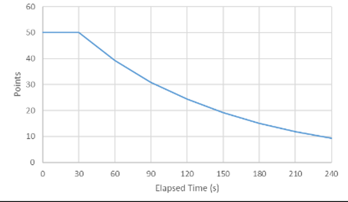
Scoring rewarded speed — full marks up to 30 seconds, decreasing steadily after. Our 1:04 total run cost points on time even with every objective completed.
Raw footage from the competition run, not a polished highlight reel — includes the full sequence from bridge deployment through figure retrieval.